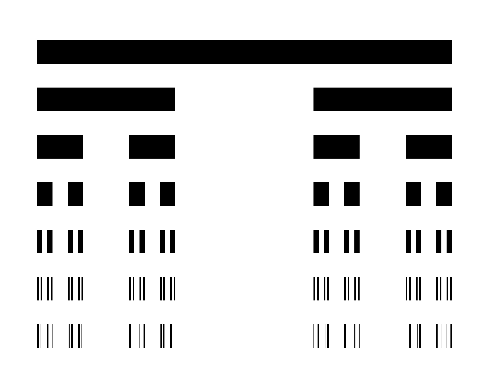

Sets
Concepts
A set is a collection of mathematical objects such as numbers, points, functions, or more sets.
If an object \(x\) is in a set \(A\), we say that \(x\) is an element of \(A\) and write \(x \in A\) to mean “\(x\) is in \(A\)”. Otherwise, we write \(x \not\in A\).
We write a set by identifying its elements. For example:
\[ A =\{1, 2, 3, 4, 5\} \]
Two sets \(A, B\) are identical just in case they have exactly the same elements:
\[ A = B \quad\Longleftrightarrow\quad x \in A \Leftrightarrow x \in B \]
Special sets
There are some special notations for the sets of numbers:
- \(\mathbb{R}\): real numbers
- \(\mathbb{N}\): natural numbers
- \(\mathbb{Z}\): integers
- \(\mathbb{C}\): complex numbers
- \(\mathbb{Q}\): rational numbers
Similarly, open, closed, and half-open real intervals are denoted:
\[ \begin{align*} [a, b] = \{x \in \mathbb{R}: a \leq x \leq b\} \\ (a, b] = \{x \in \mathbb{R}: a < x \leq b\} \\ [a, b) = \{x \in \mathbb{R}: a \leq x < b\} \\ (a, b) = \{x \in \mathbb{R}: a < x < b\} \end{align*} \]
Containment
If all the elements of a set \(A\) are also in \(B\), then we say that \(A\) is contained in \(B\), or that \(A\) is a subset of \(B\), and write \(A \subseteq B\). (Containment is a binary relation and defines a partial ordering on the set of all sets.)
\[ A \subseteq B \quad\Longleftrightarrow\quad x \in A \Rightarrow x \in B \]
Further, \(A\) is a proper subset of \(B\) just in case there is at least one element of \(B\) that is not in \(A\):
\[ A \subset B \quad\Longleftrightarrow\quad A \subseteq B \text{ and } A \neq B \]
Both relations are transitive:
If \(A \subseteq B\) and \(B \subseteq C\) then \(A \subseteq C\)
If \(A \subset B\) and \(B \subset C\) then \(A \subset C\)
- Let \(A = [0, 1)\) and \(B = (0, 1]\) and \(C = (0, 2)\)
- True or false, \(A \subset C\)
- True or false, \(B \subset C\)
- List all proper subset relations among \(\mathbb{R}, \mathbb{Q}, \mathbb{N}, \mathbb{Z}, \mathbb{C}\).
Null set
Lastly it may happen that a set contains no elements. This set is called the null set (or empty set) and is denoted \(\emptyset = \{ \}\).
For a small brain teaser, prove that every set contains the null set: for any set \(A\), \(\emptyset \subseteq A\). Intuitively, this is true; but why, based on the definitions, must it hold? (Hint: the conditional “if \(p\) then \(q\)” is trivially true if \(p\) is always false.)
Set operations
The two fundamental set operations are union and intersection. Let \(A, B\) be sets and define:
- (union) \(A \cup B = \{x: x \in A \text{ or } x \in B\}\)
- (intersection) \(A \cap B = \{x: x \in A \text{ and } x \in B\}\)
Both operations are associative:
\[ \begin{align*} A \cup (B \cup C) = (A \cup B) \cup C \\ A \cap (B \cap C) = (A \cap B) \cap C \end{align*} \]
And distributive:
\[ \begin{align*} A \cup (B \cap C) = (A \cup B) \cap (A \cup C) \\ A \cap (B \cup C) = (A \cap B) \cup (A \cap C) \end{align*} \]
Proofs are direct and left as an exercise: apply definitions of union/intersection and show that the conditions specified by each construction are equivalent. The properties follow, essentially, from the meanings of “and” and “or”.
The operation of set difference corresponds to removing the elements of one set from another set:
\[ A \setminus B = \{x: x \in A \text{ and } x \not\in B\} \]
Set difference is not distributive over unions and intersections, but rather exhibits the following properties:
\[ \begin{align*} A \setminus (B \cap C) = (A \setminus B) \cup (A \setminus C) \\ A \setminus (B \cup C) = (A \setminus B) \cap (A \setminus C) \end{align*} \]
We’ll review the proof in class.
Lastly, the Cartesian product between sets is the set of all possible pairs of elements from each set:
\[ A \times B = \{(a, b): a \in A, b \in B\} \]
The \(n\)-fold product of a set \(A\) with itself is written \(A^n\):
\[ A^n = \{(a_1, \dots, a_n): a_i \in A, i = 1, \dots, n\} \]
This is a handy construction, for example, in representing:
- \(n\)-dimensional real space (\(\mathbb{R}^n\))
- an \(n\)-dimensional unit cube (\([0, 1]^n\))
- 32-bit integers (\(\{0, 1\}^{32}\))
- Let \(A = [0, 1)\) and \(B = (0, 1]\) and write the following sets as real intervals.
- \(A \cup B\)
- \(A \cap B\)
- \(B\setminus A\)
- \((A \cup B) \setminus (A \cap B)\)
- \((A \cap B) \setminus (A \cup B)\)
Cardinality
The cardinality of a set is the number of elements it contains, and is written \(|A|\). We say that:
- \(A\) is finite if \(|A| < \infty\)
- \(A\) is countable if \(|A| = |\mathbb{N}|\)
- \(A\) is uncountable if \(|A| > |\mathbb{N}|\)
The power set of \(A\) is the set of all subsets of \(A\), and is written:
\[ 2^A = \{B: B \subseteq A\} \]
If \(A\) is finite, \(|2^A| = 2^{|A|}\); otherwise, \(2^A\) is uncountable. We’ll prove the finite case in class.
- If \(A = \{0, 6, 12, 44, 190\}\), what is \(|A|\)?
- If \(A = \{H, T\}\), list all the elements of \(2^A\).
- If \(A = \{x \in \mathbb{N}: x \leq 100 \text{ and } x\%2 = 0\}\), find \(|A|\) and \(|2^A|\)
Sequences of sets
Consider a sequence of sets \(A_1, A_2, \dots\). For short, we write the sequence \(\{A_i\}_{i \in I}\) or simply \(\{A_i\}\), where the index set is implicit from context.
Define the union/intersection of the first \(n\) sets as follows:
\[ \begin{align*} \bigcup_{i = 1}^n A_i = A_1 \cup A_2 \cup \cdots \cup A_n = \{x: x \in A_i \text{ for some } i \leq n\} \\ \bigcap_{i = 1}^n A_i = A_1 \cap A_2 \cap \cdots \cap A_n = \{x: x \in A_i \text{ for every } i \leq n\} \end{align*} \]
Slightly more generally, one might define the union of a subcollection as \(\bigcup_{j \in J} A_j\) for some collection of indices in the index set \(J \subset \mathbb{N}\).
Now, if the sequence is infinite, the union or intersection of all sets in the sequence is defined as:
\[ \begin{align*} \bigcup_{n = 1}^\infty A_n = \{x: x \in A_i \text{ for some } i \in \mathbb{N} \} \\ \bigcap_{n = 1}^\infty A_n = \{x: x \in A_i \text{ for every } i \in \mathbb{N}\} \end{align*} \]
These are referred to as countable unions and countable intersections.
We say that a sequence is monotone if sets are sequentially nested, and more specifically, that the sequence is:
- nondecreasing if \(A_i \subseteq A_{i + 1}\) for every \(i \in \mathbb{N}\)
- increasing if \(A_i \subset A_{i + 1}\) for every \(i \in \mathbb{N}\)
- nonincreasing if \(A_i \supseteq A_{i + 1}\) for every \(i \in \mathbb{N}\)
- decreasing if \(A_i \supset A_{i + 1}\) for every \(i \in \mathbb{N}\)
Note that increasing sequences are also nondecreasing, and that decreasing sequences are also nonincreasing. We define the limit of a monotone sequence of sets as the countable union or intersection:
\[ \begin{align*} \lim_{n\rightarrow\infty} A_n = \bigcap_{n = 1}^\infty A_n \quad\text{(nonincreasing)} \\ \lim_{n\rightarrow\infty} A_n = \bigcup_{n = 1}^\infty A_n \quad\text{(nondecreasing)} \end{align*} \]
- If \(\{A_n\}\) is a nondecreasing sequence, what is \(\bigcap_{n = 1}^\infty A_n\)?
- If \(\{A_n\}\) is a nonincreasing sequence, what is \(\bigcup_{n = 1}^\infty A_n\)?
- If \(\{A_n\}\) is a decreasing sequence, what is \(\bigcap_{i = 1}^n A_i\)?
- If \(\{A_n\}\) is a decreasing sequence, what is \(\bigcap_{n = 1}^\infty A_n\)?
- If \(\{A_n\}\) is an increasing sequence, what is \(\bigcup_{i = 1}^n A_i\)?
The Cantor set
The Cantor set is a subset of the unit interval with the counterintuitive distinction of having uncountably many points, but zero length. It is formed by recursively removing middle thirds, first from the unit interval, and then from each subinterval. This process is illustrated by the picture below.

Each row represents a set consisting of the union of the shaded intervals, so we are considering a sequence of sets \(\{C_n\}\) where:
\[ \begin{align*} C_0 &= [0, 1] \\ C_1 &= \left[0, \frac{1}{3}\right] \cup \left[\frac{2}{3}, 1\right] \\ C_2 &= \left\{\left[0, \frac{1}{9}\right] \cup \left[\frac{2}{9}, \frac{1}{3}\right]\right\} \cup \left\{\left[\frac{2}{3}, \frac{7}{9}\right] \cup \left[\frac{8}{9}, 1\right]\right\} \\ &\vdots \end{align*} \] One way to write the recursion explicitly at an arbitrary step \(n\) is to consider the left endpoints \(a_i^{(n - 1)}\) of the intervals from the previous step in the recursion and express the \(n\)th step as:
\[ C_n = \bigcup_{i = 1}^{2^{n - 1}} \left\{ 3^{-n} \left([0, 1]\cup[2, 3]\right) + a_i^{(n - 1)} \right\} \]
(In this expression, \(c\times[a, b] + d\) is shorthand for \([ca + d, cb + d]\) and \(\times, +\) distribute over unions.)
Note that the sequence \(\{C_n\}\) is monotonic and strictly decreasing. The Cantor set is defined as the limit of this sequence:
\[ C^* = \lim_{n \rightarrow \infty} C_n = \bigcap_{n = 0}^\infty C_n \]
The total length of any of the sets in the sequence is the sum of the lengths of the component intervals. The component intervals all have the same length \(3^{-n}\), so:
\[ \text{length}(C_n) = \sum_{i = 1}^{2^n} 3^{-n} = \left(\frac{2}{3}\right)^n \longrightarrow 0 \quad \text{ as } \quad n \rightarrow \infty \]
Although it requires proof that \(\text{length}(\lim_n C_n) = \lim_n \text{length}(C_n)\), this should seem plausible. (We will prove this result a little later.) Thus, then Cantor set has zero total length:
\[ \text{length}(C^*) = \text{length}\left(\lim_{n \rightarrow \infty} C_n\right) = \lim_{n \rightarrow \infty}\text{length}(C_n) = 0 \]
For this reason, and also from the construction of the Cantor set (as the limit of a sequence of countable unions of geometrically shrinking closed intervals) one would expect that \(C^*\) is countable. But in fact one can construct a one-to-one correspondence between the points in \(C^*\) and the points in the unit interval \([0, 1]\). (The trick is to observe that the ternary (base-3) decimal representation of any point in \(C^*\) only utilizes two unique digits and can thus be mapped to a binary decimal representation of a point in the unit interval in a way that is obviously bijective.) This establishes that \(|C^*| = |[0, 1]|\) — there are exactly the same number of points in the Cantor set as there are in the unit interval — and therefore that the Cantor set is uncountable!